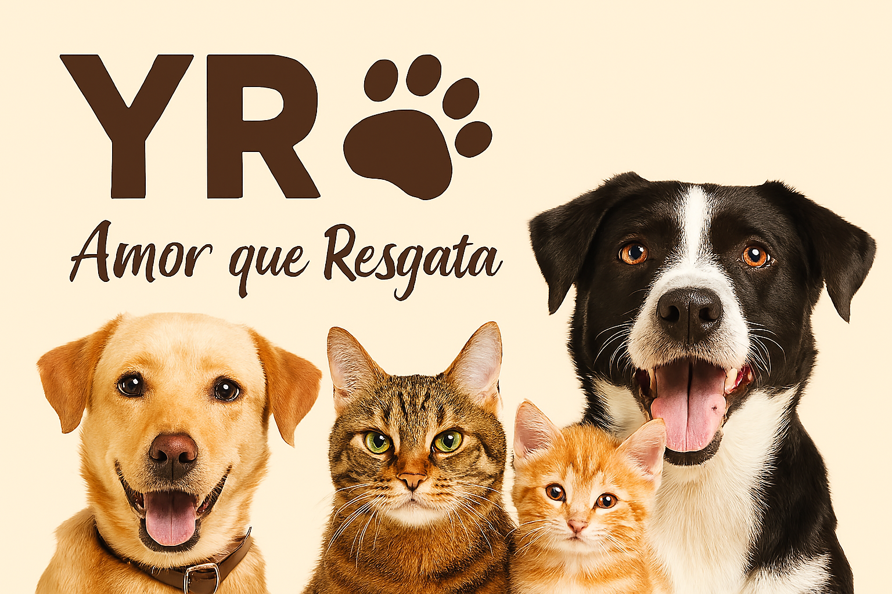

Quem Somos
A YR nasceu do desejo de transformar vidas — humanas e animais. Somos uma organização sem fins lucrativos dedicada ao resgate, cuidado e adoção responsável de animais abandonados.
Contato
Email: contato@amorqueresgata.org
Telefone: (62) 99999-9999
Endereço: Rua Caramelo, Nº 38, Goiânia/GO